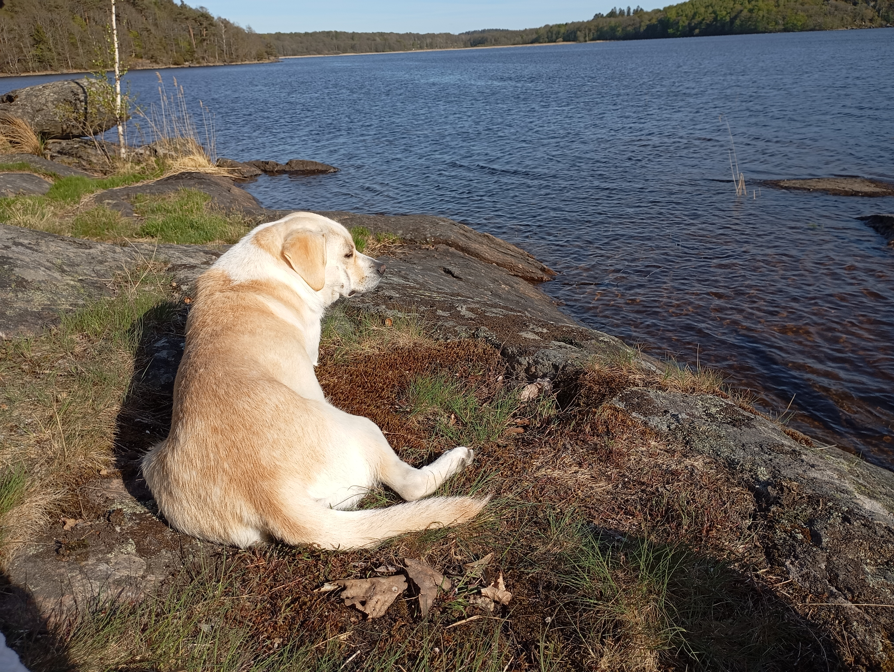
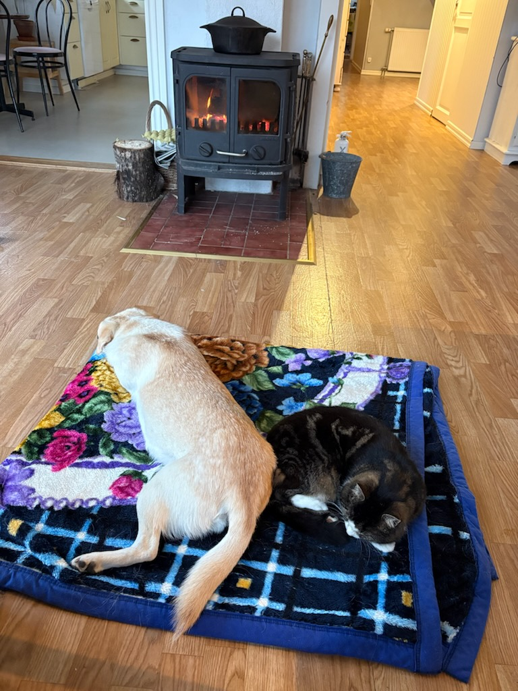

Buna ziua!
Nu har jag bott i Sverige i drygt 3 månader och jag kommer knappt ihåg mitt språk gamla längre.
Men Mulţumesc (Tack) kommer jag ihåg.
Tack till Kicki och Marianne som hjälpte mig att komma hit.
Även om det är mycket nytt att lära känna och förstå mig på så vill jag ändå säga att jag trivs. Mina människor gillar skog, vatten och natur och nyligen har dom tagit med mig till ett nytt typ av hus. Det är mycket mindre, det är kallt på morgonen - men dom ger mig massa filtar så det är helt ok ändå. Igår satt vi på klippan tillsammans och det var fint. Men nu längtar jag hem till den varma brasan och till min kompis som dom kallar katten.



